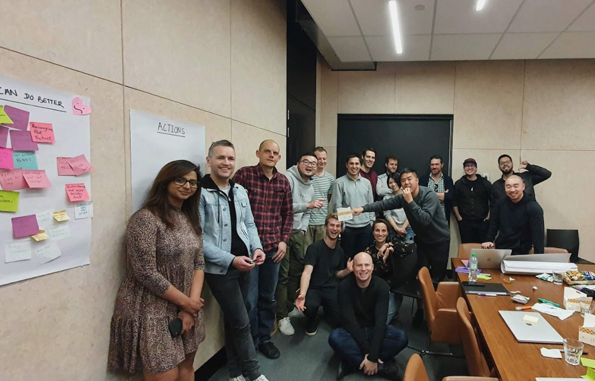

2021
Lead Product Designer
Laybuy
August 2021 - October 2022
Remote (Auckland, Sydney, London)
Led product design within a fast-paced fintech offering consumers instalment-based credit. Embedded design and product thinking to empower highly collaborative teams to build intuitive features that brought valuable customers to the heart of the business.
-
Formed and led a small product design team that covered all phases of the design process and supported five cross-functional engineering teams.
-
Directed design across the end-to-end customer journey, including onboarding, authentication, shopping, payments and brand experience.
-
Reported to the Chief Product Officer and Founder. Coordinated with senior leadership to align business goals and facilitated workshops rallying teams around a shared vision.
-
Demonstrated the value of financial welling, allowing the business to tighten up consumer and credit eligibility, reducing fraud risk and increasing long-term profitability.


